Neo8085 v2.0.1
An Intel 8085 microprocessor simulator with an integrated development environment
Overview
Neo8085 is an Intel 8085 microprocessor simulator for learning and for developing 8085 programs. Write a program in the built-in editor, assemble it with an Intel-compatible assembler, and run it one instruction at a time, in slow motion or at the real speed of a 3.072 MHz trainer kit, while you watch the registers, flags, stack, memory, I/O ports and every machine cycle on the bus.
Version 2 executes all 256 opcodes, including the undocumented ones, with exact T-state timing. It adds the complete 8085 interrupt system, 8255 and 8253 peripheral chips, T-state timing diagrams, opcode listings and Intel HEX files.
Download Neo8085 v2.0.1
Windows installer, 64-bit Windows 10 (1809) or later. Free and open source.
What's new in version 2
- Complete instruction set: all 256 opcodes, including the 10 undocumented 8085 instructions and the V and K flags
- Real-time execution at 3.072 MHz or any clock you choose, from 1 Hz up to 6 MHz
- Machine cycles and timing diagrams for every instruction
- Interrupts: TRAP, RST 7.5, RST 6.5, RST 5.5 and INTR with masks, priorities and
SIM/RIM - 8255 PPI and 8253 PIT peripheral chips, wired to the I/O ports and interrupts
- Intel-compatible assembler with expressions,
SET, conditional assembly and macros - Opcode listing, printing, and Intel HEX import and export
- 15 example programs, an I/O panel with LEDs and switches, and resizable panes
🎬 Demo
A 50-second tour of the simulator: real-time execution, the editor, live registers and memory, machine cycles, the timing diagram, the 8253 timer and the opcode listing.
✨ Features
Integrated Development Environment
- Syntax highlighting, line numbers and the address of every assembled line
- Breakpoints set by clicking a line number or pressing
F9 - File operations (New, Open, Save, Save As) and zoom
- Resizable, hideable panes; the layout is remembered
Intel-Compatible Assembler
- All 74 documented mnemonics and the 10 undocumented 8085 instructions
- Intel expressions:
HIGH/LOW,MOD,SHL/SHR, relational and logical operators,$ ORG,EQU,SET,DB,DW,DS,END,IF/ELSE/ENDIF- Macros with
LOCAL,REPT,IRPandIRPC - Clear error messages with line numbers
8085 Execution
- Machine code is fetched and decoded from memory, so self-modifying and hand-patched code runs as on hardware
- All 256 opcodes, with 8085 flag behaviour and the undocumented V and K flags
- Exact T-state timing for every instruction and interrupt acknowledge
- Clock-driven runs: Step, slow-motion Run (100 Hz), fast run (2 kHz) and Real-Time at any clock
Debugging
- Executed line highlighted in the editor
- Live registers, flags, stack and memory
- Execution log of every instruction, I/O transfer and interrupt
- Instruction count, T-states and elapsed time
Hardware
- All five interrupt inputs, with masks, priorities and
SIM/RIM - 8 LEDs, 8 switches, input ports and the
SID/SODserial pins - 8255 PPI: modes 0, 1 and 2 with handshakes and bit set/reset
- 8253 PIT: all six counter modes, clocked by the CPU
Machine Cycles and Tools
- Machine cycles of every instruction, with a T-state timing diagram
- Intel-style opcode listing, saved or printed
- Intel HEX export and import
- Number converter (Hex, Binary, Decimal, ASCII) and memory editor
- 15 ready-to-run example programs
Feature Highlights
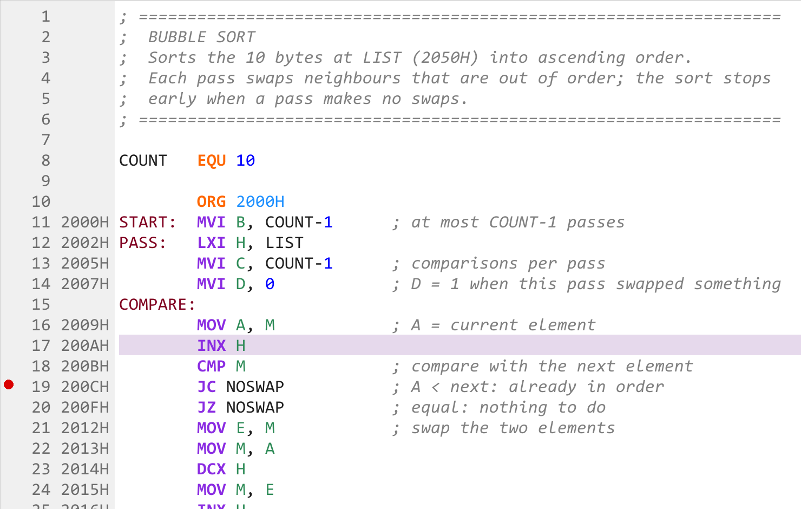
Code Editor
Write 8085 assembly in an editor made for it. After assembling, each line shows the address its code was placed at.
- Syntax highlighting for instructions, registers, numbers, labels and directives
- Line numbers with the address of every assembled line
- Breakpoints shown as red dots
- The executed line highlighted while stepping and running
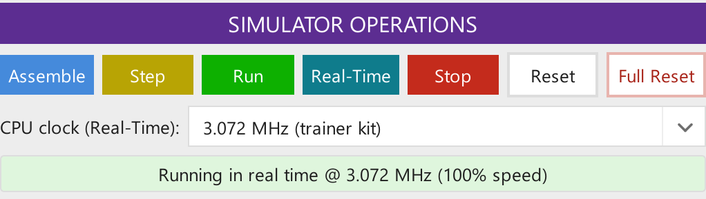
Simulator Controls and CPU Clock
Every run mode is driven by a CPU clock locked to real time, so instructions take exactly as long as their T-states say.
- Assemble, Step, Run, Real-Time and Stop
- Real-Time runs at the speed of a 3.072 MHz trainer kit, with the achieved speed shown
- Clock presets from 1 Hz to 6 MHz, or type any value such as
250 kHz - Reset like a trainer's RESET key (memory kept), or Full Reset
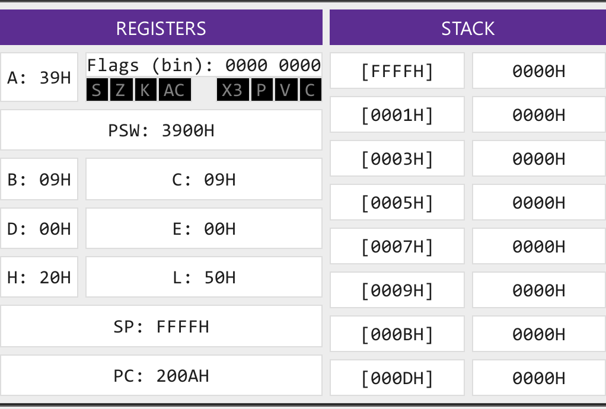
Registers, Flags and Stack
Watch the CPU state change with every instruction.
- A, B, C, D, E, H, L, SP, PC and PSW
- Flags S, Z, AC, P and CY, plus the undocumented K and V
- The top 8 words of the stack
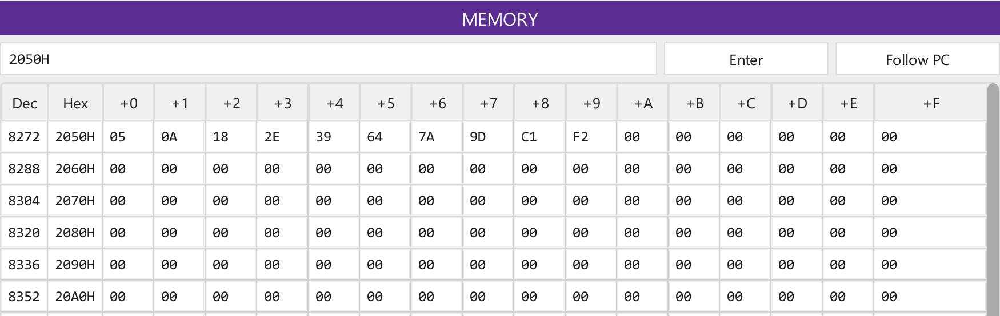
Live Memory View
See memory change while a program runs. Here the Bubble Sort example has sorted the list at 2050H.
- The full 64 KB address space, 16 bytes per row
- Addresses in hexadecimal and decimal
- Jump to any address, or let Follow PC track the program counter
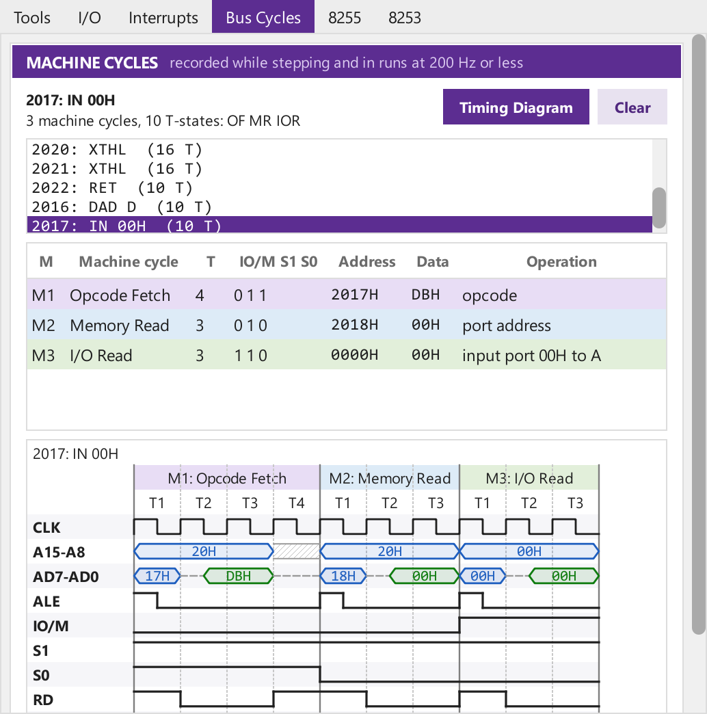
Machine Cycles
Every instruction and interrupt acknowledge is broken down into its 8085 machine cycles.
- Opcode Fetch, Memory Read/Write, I/O Read/Write, Interrupt Acknowledge, Bus Idle and Halt
- T-states, IO/M S1 S0 status, address and data byte of each cycle
- A history of the recorded instructions to compare them
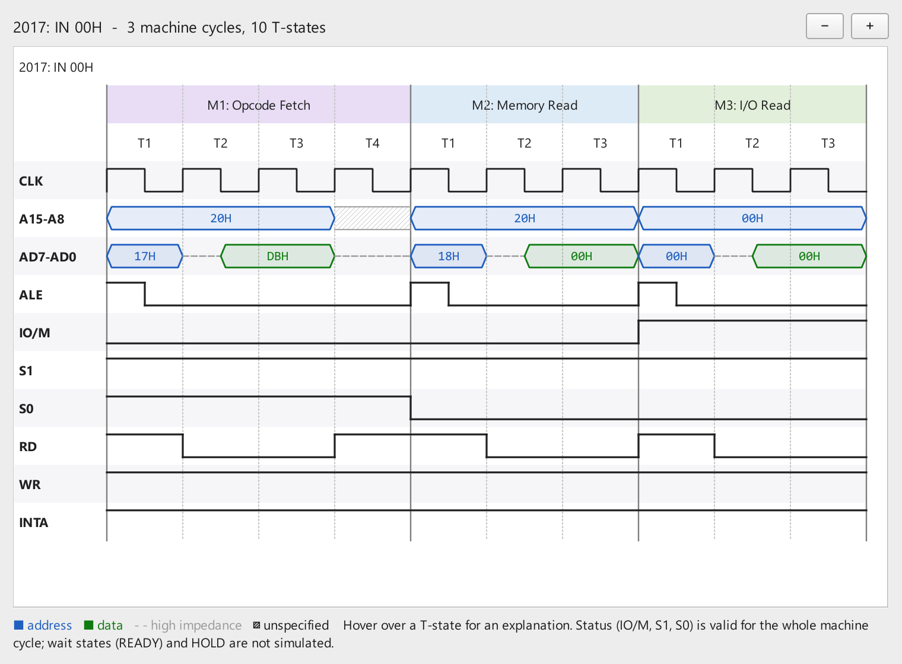
Timing Diagrams
A T-state timing diagram of the 8085 bus for any recorded instruction (Ctrl+T), drawn from the Intel 8085AH data sheet.
- CLK, A15-A8, AD7-AD0, ALE, IO/M, S1, S0, RD, WR and INTA
- Address and data values on the multiplexed bus
- Hover over a T-state for an explanation of what happens on the bus
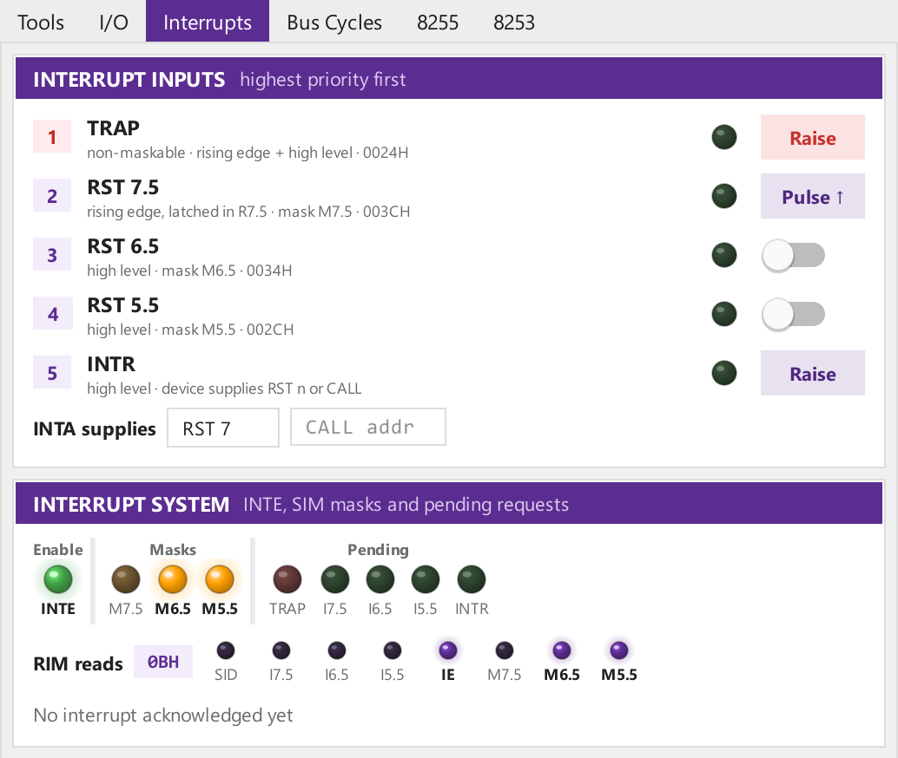
Interrupts
The five 8085 interrupt inputs, with the Intel 8085A interrupt structure.
- Raise TRAP, RST 7.5, RST 6.5, RST 5.5 and INTR while a program runs
- INTE, the SIM masks, pending requests and the value RIM reads
- Interrupts sampled in the next-to-last clock of each instruction, as on the chip
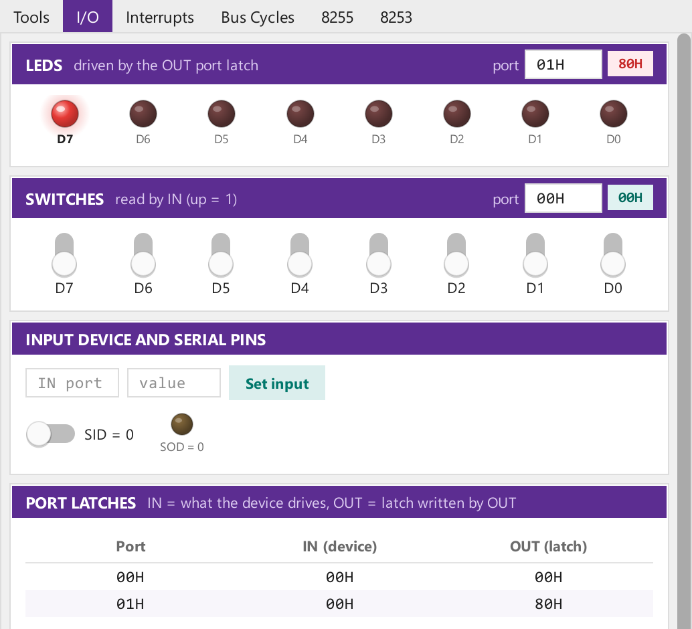
Input and Output
Simulated devices on the I/O ports, with separate input and output latches as on a real bus.
- 8 LEDs on an output port and 8 switches on an input port
- Any input port value, and the
SID/SODserial pins - A table of every port the program has used
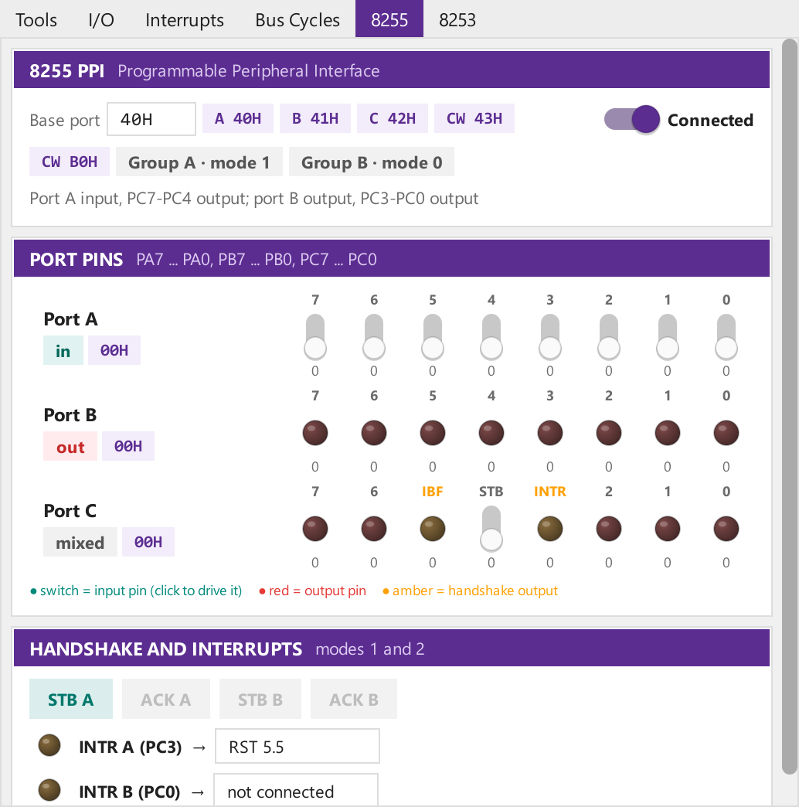
8255 Programmable Peripheral Interface
An 8255A at ports 40H-43H, programmed with OUT like on a trainer kit.
- Modes 0, 1 and 2, and bit set/reset of port C
- All 24 port pins: switches for inputs, lamps for outputs
- STB and ACK handshakes, with INTR A and INTR B wired to an interrupt
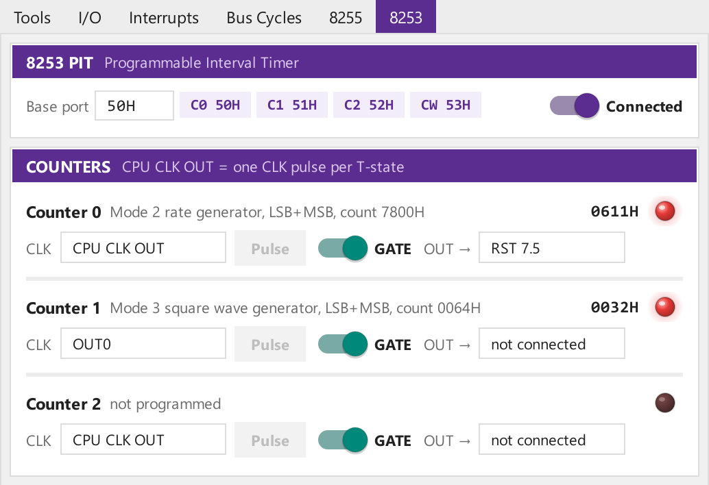
8253 Programmable Interval Timer
An 8253 at ports 50H-53H, clocked by the CPU's CLK OUT, so timer interrupts arrive at the exact T-state.
- All six counter modes, binary and BCD counting, the counter latch command
- Each counter's mode, count, live value and OUT
- Cascaded counters, GATE switches and OUT wired to the interrupts
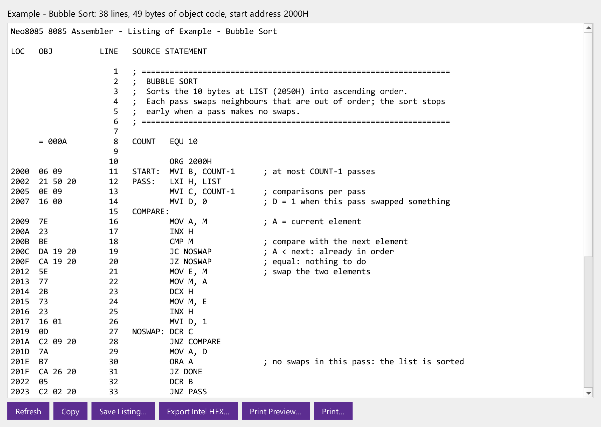
Opcode Listing and Intel HEX
One click turns a program into an Intel-style listing, ready to save or print.
- Address, object code, line number and source of every line, plus a symbol table
- Save as a
.lstfile or print it (Ctrl+P) - Export Intel HEX for EPROM programmers and trainer kits, and import HEX files back as source
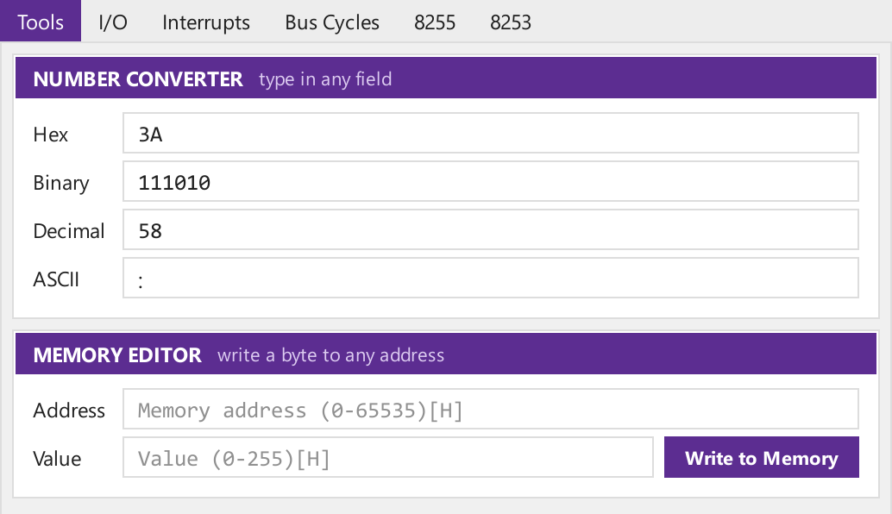
Number Converter and Memory Editor
Convert values and edit memory directly.
- Convert between Hexadecimal, Binary, Decimal and ASCII as you type
- Write a byte to any address; program code can be patched by hand
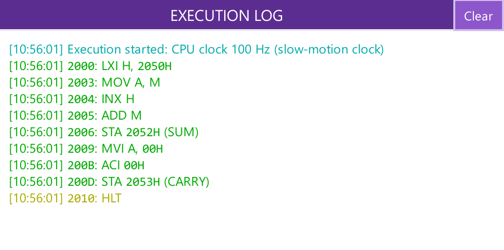
Execution Log
A record of everything the simulator does.
- Each executed instruction with its address in slow-motion runs
- I/O transfers, interrupts and chip register accesses
- Assembler and CPU errors with clear messages
🛠️ Installation
Option 1: Download the Installer (Recommended)
- Download
Neo8085-Installer-v2.0.1.exefrom the Releases page. - Run it and choose whether to install for yourself (no administrator rights needed) or for all users.
- Launch Neo8085 from the Start menu.
The installer upgrades an earlier version in place, and Neo8085 can be removed from Settings → Apps. It needs 64-bit Windows 10 (version 1809) or later, or Windows 11.
Option 2: Run from Source
Requires Python 3.13+ and PySide6 (Qt for Python). Works on Windows, Linux and macOS.
1. Clone the repository:
cd Neo8085
2. Install dependencies:
3. Run the application:
Option 3: Build the Windows Executable
After installing the dependencies, run build.bat. It builds the executable with PyInstaller and, if Inno Setup is installed, the installer too.
📝 Usage
Examples
The Examples menu loads and assembles ready-made programs, each with a note in the log on how to run it:
- Basics: Add Two Numbers, BCD Addition (
DAA), Multiply (shift and add), Bubble Sort, Block Copy and Checksum - I/O and Real Time: LED Chaser, Switches to LEDs (
IN/OUT), Serial Output on SOD (SIM/RIM) - Interrupts: an interrupt-driven counter using TRAP, RST 7.5 and INTR
- Peripherals: 8255 mode 0 with bit set/reset, an 8253 real-time clock with timer interrupts, 8255 mode 1 strobed input
- Advanced: Macros and Conditional Assembly, Undocumented Instructions, Machine Cycles Tour
Assembling and Running
- Assemble: click "Assemble" or press
Ctrl+B - Step: click "Step" or press
F10; the clock stops between steps - Run (
F5): a 100 Hz slow-motion clock, with every instruction highlighted and logged - Run without Highlighting (
Ctrl+Shift+F5): a 2 kHz clock - Real-Time (
Ctrl+F5): the clock chosen with the CPU clock selector, 3.072 MHz by default - Breakpoints: click a line number or press
F9 - Reset (
Ctrl+R) restarts the program keeping memory; Full Reset (Ctrl+Shift+R) clears everything
Hardware
- Interrupts tab: raise TRAP, RST 7.5, RST 6.5, RST 5.5 or INTR while the program runs, or while it waits in
HLT - I/O tab: set the switches and input ports read by
IN, and watch the LEDs written byOUT - 8255 and 8253 tabs: drive input pins, give handshake pulses, choose counter clocks and GATE levels, and wire chip outputs to interrupt pins
- Bus Cycles tab: step an instruction to see its machine cycles; press
Ctrl+Tfor the large timing diagram
📚 Documentation
Supported Instructions
All 74 documented 8085 mnemonics:
Data Transfer: MOV, MVI, LDA, STA, LDAX, STAX, LHLD, SHLD, LXI, XCHG, XTHL, SPHL, PCHL
Arithmetic: ADD, ADI, ADC, ACI, SUB, SUI, SBB, SBI, INR, DCR, INX, DCX, DAD, DAA
Logical: ANA, ANI, ORA, ORI, XRA, XRI, CMA, CMP, CPI, RLC, RRC, RAL, RAR, STC, CMC
Branching: JMP, Jcc, CALL, Ccc, RET, Rcc, RST 0-7 (conditions Z, NZ, C, NC, P, M, PE, PO)
Stack, I/O and Machine Control: PUSH, POP, IN, OUT, HLT, NOP, EI, DI, RIM, SIM
Undocumented 8085 Instructions
| Instruction | Opcode | Operation | T-states |
|---|---|---|---|
DSUB | 08H | HL ← HL − BC, all flags affected | 10 |
ARHL | 10H | Arithmetic shift right HL, CY ← L0, V cleared | 7 |
RDEL | 18H | Rotate DE left through carry (CY and V affected) | 10 |
LDHI d8 / LDSI d8 | 28H / 38H | DE ← HL + d8 / DE ← SP + d8 | 10 |
RSTV | CBH | RST to 0040H if V is set | 12 / 6 |
SHLX / LHLX | D9H / EDH | Store / load HL at the address in DE | 10 |
JNK a16 / JK a16 | DDH / FDH | Jump if K = 0 / K = 1 (also JNX5 / JX5) | 10 / 7 |
Interrupts
| Input | Priority | Maskable by | Triggering | Vector |
|---|---|---|---|---|
| TRAP | 1 (highest) | nothing (non-maskable) | rising edge and high level | 0024H |
| RST 7.5 | 2 | EI/DI, SIM (M7.5) | rising edge, latched | 003CH |
| RST 6.5 | 3 | EI/DI, SIM (M6.5) | high level | 0034H |
| RST 5.5 | 4 | EI/DI, SIM (M5.5) | high level | 002CH |
| INTR | 5 (lowest) | EI/DI | high level; the device supplies an instruction | from the instruction |
Peripheral Chips
| Chip | Ports | Registers |
|---|---|---|
| 8255 PPI | 40H-43H | port A, port B, port C, control |
| 8253 PIT | 50H-53H | counter 0, counter 1, counter 2, control |
The base port of each chip can be changed, or the chip disconnected, in its tab.
Assembler Directives
ORG expr: set the location countername EQU expr/name SET expr: define a constant / a redefinable symbolDB/DW/DS: define bytes and strings / define 16-bit words / reserve memoryEND [start]: end of the program, optionally with the start addressIF expr/ELSE/ENDIF: conditional assemblyname MACRO params…ENDM, withLOCALandEXITM;REPT,IRP,IRPC
The full assembler syntax, operator precedence and machine-cycle reference are in the README on GitHub.
Keyboard Shortcuts
| Shortcut | Action |
|---|---|
| Ctrl+N | New File |
| Ctrl+O | Open Program |
| Ctrl+S / Ctrl+Shift+S | Save / Save As |
| Ctrl+B | Assemble |
| F10 | Step |
| F5 | Run |
| Ctrl+Shift+F5 | Run without Highlighting |
| Ctrl+F5 | Run Real-Time |
| F8 | Stop |
| Ctrl+R / Ctrl+Shift+R | Reset (keep memory) / Full Reset |
| F9 | Add Breakpoint |
| Ctrl+T | Timing Diagram |
| Ctrl+L | Opcode Listing |
| Ctrl+P | Print Listing |
| Ctrl+E / Ctrl+I | Export / Import Intel HEX |
| Ctrl+J | Show/hide the lower panes |
| Ctrl+= / Ctrl+- / Ctrl+0 | Zoom In / Zoom Out / Reset Zoom |
📸 Screenshots
🤝 Contributing
Contributions to Neo8085 are welcome. Here's how to get started:
- Fork the repository
- Create a new branch:
git checkout -b feature-name
- Make your changes and run the tests:
python -m unittest discover -s tests
- Commit and push to your fork:
git commit -m "Describe your changes"
git push origin feature-name - Open a Pull Request
The test suite covers every opcode's encoding, timing, behaviour and machine cycles, the interrupts, the 8255 and 8253, the example programs, the listing and Intel HEX. The CPU is also checked against an independently written reference model of the 8085. Every change is tested on Windows, Linux and macOS.
Contribution Guidelines
- Follow the existing code style and structure
- Write clear, descriptive commit messages
- Comment complex logic
- Update the documentation and add tests for new features
License
This project is licensed under the GNU General Public License v3.0. See the LICENSE file for details.
Intel is a trademark of Intel Corporation. Neo8085 is an independent project and is not affiliated with or endorsed by Intel.
Acknowledgements
- Inspired by the Intel 8085 instruction set
- Built using PySide6 (Qt for Python)